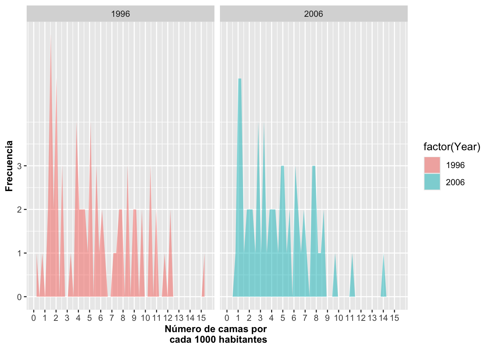

Geom_area_densidad_freqpoly
RLT
6/30/2020
Fecha de la ultima revisión
## [1] "2020-08-26"Gráficos de área, densidad y histograma de linea con geom_dotplot, geom_density y geom-freqpoly
Librerías necesarias para producir los gráficos que siguen
library(ggversa) # paquete con los datos
library(tidyverse) # paquete que instala múltiples paquetes
library(gridExtra) # Un paquete para organizar las figuras de ggplot2
library(janitor)Gráfico de área con geom_area
Sección Gráfico De Área
El gráfico de área es análogo a un histograma o a un gráfico de barras. En la figura a continuación se observa cómo la cantidad en X cambia en frecuencia con respecto a Y a lo largo del rango de la variable X. Se observa a continuación que los datos no están agrupados en barras como cuando se usa geom_histogram pero representados como un área continua. Note que en contraste a un histograma, los cambios de frecuencia son suavizados y no discretos.
DW=dipodium
DW=clean_names(DW)
a=ggplot(DW, aes(distance))
a+geom_area(stat="bin", fill="aquamarine")+
labs(x="Distancia", y="Frecuencia")+
theme(axis.title=element_text(size=10,face="bold"))
En este siguiente gráfico se cambia el color de linea que sigue el contorno del área. Para hacer este cambio se puede identificar el tipo de linea con linetype, el color con color, el grosor de la linea con size y la intensidad del color con alpha.
a=ggplot(DW, aes(distance))
a+geom_area(stat="bin", fill="steelblue1",
linetype=1, color="red", size=2.0, alpha=0.5)+
labs(x="Distancia", y="Frecuencia")+
theme(axis.title=element_text(size=10,face="bold"))
Los tipos de linetype
Vea las alternativas de “linetype” en este enlace linetype. Algunas de estas lineas se pueden llamar usando un nombre “blank”, “solid”, “dashed”, “dotted”, “dotdash”, “longdash”, “twodash”, o numeración “1F”, “F1”, “4C88C488”, "12345678.
Ahora al gráfico siguiente, se le cambia el color de la línea a negro a la vez que se le cambia el estilo de la línea con linetype y el grosor de la misma con size.
a=ggplot(DW, aes(distance))
a+geom_area(stat="bin", fill="steelblue1",
linetype="dotdash", color="black", size=.5, alpha=0.5)+
labs(x="Distancia", y="Frecuencia")+
theme(axis.title=element_text(size=10,face="bold"))
Finalmente, en el siguiente gráfico, se muestran los datos de la frecuencia de camas en hospitales por cada 1000 habitantes.
head(Camas_Hospital, n=2)## Pais Year Poblacion Camas
## 1 Armenia 1996 3173425 7.13
## 2 Australia 1996 18311000 8.50a=ggplot(Camas_Hospital, aes(Camas, fill=factor(Year)))
a+geom_area(stat="bin", alpha=0.5)+
xlab("Número de camas por \n cada 1000 habitantes")+
ylab("Frecuencia")+
scale_y_continuous(breaks=c(0,1,2,3,4,5,6,7,8,9))+
scale_x_continuous(breaks=c(0:15))+
theme(axis.title=element_text(size=10,face="bold"))+
facet_wrap(~Year)
La función densidad aes(y=..density..)
Uno puede utilizar la opción stat a la vez que identifica el eje de Y como la densidad con la siguiente modificación aes(y=..density..) para visualizar el gráfico de densidad en los datos en vez de mostrar el conteo/frecuencia para cada grupo. Si uno compara las dos gráficas anteriores a estas nuevas gráficas uno observa que la densidad de camas en hospitales por 100,000 cambio con los años habitantes, que hubo un aumento en densidad (proporcionalmente más camas en 2006). Nota que no hay un pico cerca de uno.
a=ggplot(Camas_Hospital, aes(Camas, fill=factor(Year)))
a+geom_area(aes(y=..density..),stat="bin", alpha=0.5)+
xlab("Número de camas por cada 1000 habitantes")+
ylab("Densidad")+
theme(axis.title=element_text(size=10,face="bold"))
Opciones y Parametros de geom_area:
ggplot (el archivo de datos, aes(la variable continua)) +geom_area(stat= bin, x, y, alpha, color, fill, linetype, size)
- alpha: la intensidad del color
- color: el color de la línea alrededor del área
- fill: el color del área
- linetype: representa el estilo de línea
- size: representa el grosor de la línea
- stat: el método predeterminado es {identity}, que representa los datos, o la transformación estadística
Gráfico de densidad con geom_density
Un gráfico de densidad, también conocido como una función de probabilidad de densidad, pdf o probability density function en inglés, se utiliza con variables que contienen datos continuos. La función de densidad es continua en el rango de los valores, y la suma de todas la probabilidades es igual a uno. Vimos anteriormente que se puede visualizar la densidad también con geom_area y geom_histogram. La función geom_density facilita la producción del gráfico y amplía las alternativas como se explica en breve.
¿Qué es un kernel?
Estimar la densidad de los datos en un gráfico requiere seleccionar un parámetro, un kernel, para suavizar la distribución. El más utilizado es el gaussian, que representa la distribución normal o conocida comúnmente como distribución de forma de campana. Si no se especifica cuál kernel utilizar, la distribución normal es la predeterminada; por ejemplo, cuando se especifica geom_density() sin ninguna otra opción.
Otra alternativa es usar geom_density(kernel = c(kernel={gaussian}), u otras alternativas. Otros parámetros para kernel son:
- rectangular,
- triangular,
- epanechnikov,
- biweight,
- cosine,
- optcosine,
- gaussian
EL kernel es un tipo especial de función de probabilidad de densidad que tiene ciertas propiedades específicas, ya sea que esta no sea negativa y con valores reales de manera tal que el gráfico salga simétrico, y que la suma de la integral sea igual a uno. Se añadio tambien geom_density para comparar el resultado de las dos funciones.
Note que en el gráfico siguiente se usó el parámetro alpha=0.4. Este modifica la transparencia del color azul del parámetro fill=blue. La intensidad de alpha=0.4 puede variar de 0 a 1, tal como se ha explicado anteriormente. En el ejemplo a continuación se utilizan los datos de la Dipodium rosea otra vez.
a=ggplot(DW, aes(distance))
a+geom_area(aes(y=..density..),stat="bin", alpha=0.5)+
geom_density(kernel = c(kernel="gaussian"),
alpha=0.4, fill="blue")+
labs(x="Distancia", y="Densidad")+
theme(axis.title=element_text(size=10,face="bold"))
La función de geom_density se puede entender mejor si se evalúa con datos simulados. Vamos a continuación a simular datos con diferentes tamaños de muestra para visualizar las densidades. En la simulación a continuación se crean 4 data frame con 2000, 500, 50 y 10 datos respectivamente con la función rnorm. Naturalmente, lo que se observa es que si los datos provienen de una distribución normal, entre más datos se incluyan, la distribución correspondiente se acerca más a como debe lucir una distribución normal. Pero, lo contrario es que con pocos datos, es probable que la densidad no se asemeje a la distribución teórica (normal).
a=rnorm(20000, 0, 1)
a=as.data.frame(a)
a=ggplot(a, aes(a))+
geom_density(kernel = c(kernel="gaussian"),
alpha=0.4, fill="yellow")+
labs(y="Densidad")+
theme(axis.title=element_text(size=10,face="bold"))
b=rnorm(500, 0, 1)
b=as.data.frame(b)
b=ggplot(b, aes(b))+
geom_density(kernel = c(kernel="gaussian"),
alpha=0.4, fill="red")+
labs(y="Densidad")+
theme(axis.title=element_text(size=10,face="bold"))
c=rnorm(50, 0, 1)
c=as.data.frame(c)
c=ggplot(c, aes(c))+
geom_density(kernel = c(kernel="gaussian"),
alpha=0.4, fill="blue")+
labs(y="Densidad")+
theme(axis.title=element_text(size=10,face="bold"))
d=rnorm(10, 0, 1)
d=as.data.frame(d)
d=ggplot(d, aes(d))+
geom_density(kernel = c(kernel="gaussian"),
alpha=0.4, fill="grey")+
labs(y="Densidad")+
theme(axis.title=element_text(size=10,face="bold"))
Opciones y Parametros de geom_density:
ggplot(el archivo de datos, aes(la variable continua))
- geom_density(kernel= {…}), x, y, alpha, color, fill, linetype, size, weight
- … representa el parámetro deseado; ej. gaussian, triangular, rectangular, etc.
- alpha: la intensidad del color
- fill: el color del área
- color: el color de la línea alrededor del área
- linetype: representa el estilo de línea
- size: representa el grosor de la línea
- weight: para modificar el valor original; entonces no sería, por ejemplo, el conteo o suma de los valores si no un valor ponderado (promedio ponderado)
- geom_density(kernel= {…}), x, y, alpha, color, fill, linetype, size, weight
Gráfico de frecuencia de polígono con geom_freqpoly
El gráfico de frecuencia de polígono es similar al gráfico de área y de densidad, la diferencia es que no se rellena el area con color. También se puede cambiar la cantidad de compartimentos usando binwidth. En el gráfico de polígono, es solamente la línea la que gráficamos y no hay parámetro de fill del área debajo de la línea.
a=ggplot(DW, aes(distance))
a+geom_freqpoly(binwidth=.1, color="steelblue")+
labs(x="Distancia", y="Frecuencia")+
theme(axis.title=element_text(size=14,face="bold"))
Se modifica otras opciones como sigue: intensidad del color con alpha, el tipo de línea con linetype y el grosor de la línea con size tal como se muestra a continuación.
DW%>%
drop_na()%>%
ggplot(aes(distance, colour=species_name))+
geom_freqpoly(alpha=0.8, size=1.5, binwidth=.1)+
labs(x="Distancia", y="Frecuencia")+
theme(axis.title=element_text(size=14,face="bold"))
Opciones y Parametros de geom_freqpoly
ggplot(el archivo de datos, aes(la variable continua))
- geom_freqpoly(stat={bin}, x, y, alpha, color, fill, linetype, size)
- alpha: la intensidad del color
- color: el color de la línea alrededor del área
- linetype: representa el estilo de línea; vea sección
- size: representa el grosor de la línea